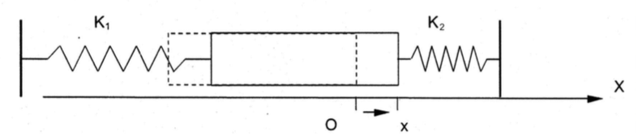
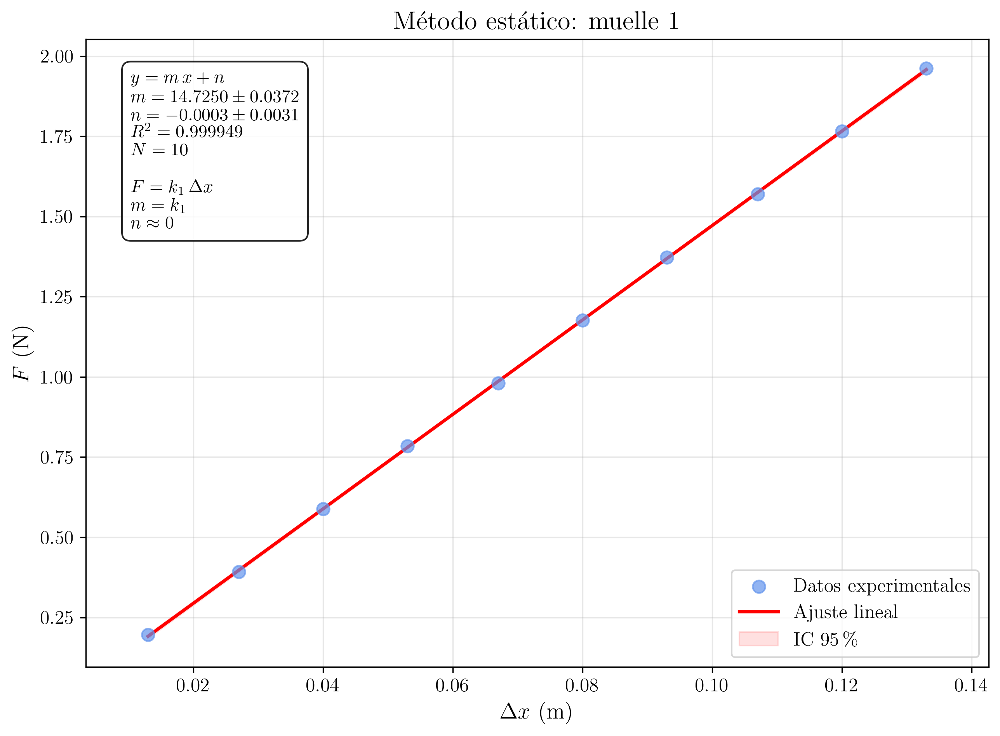
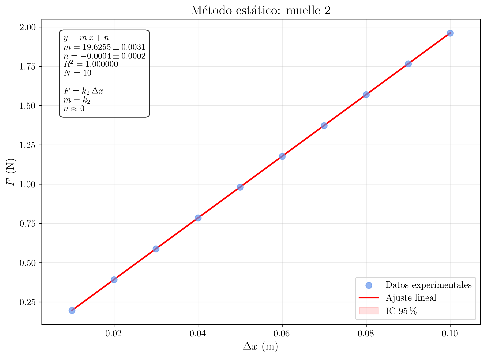
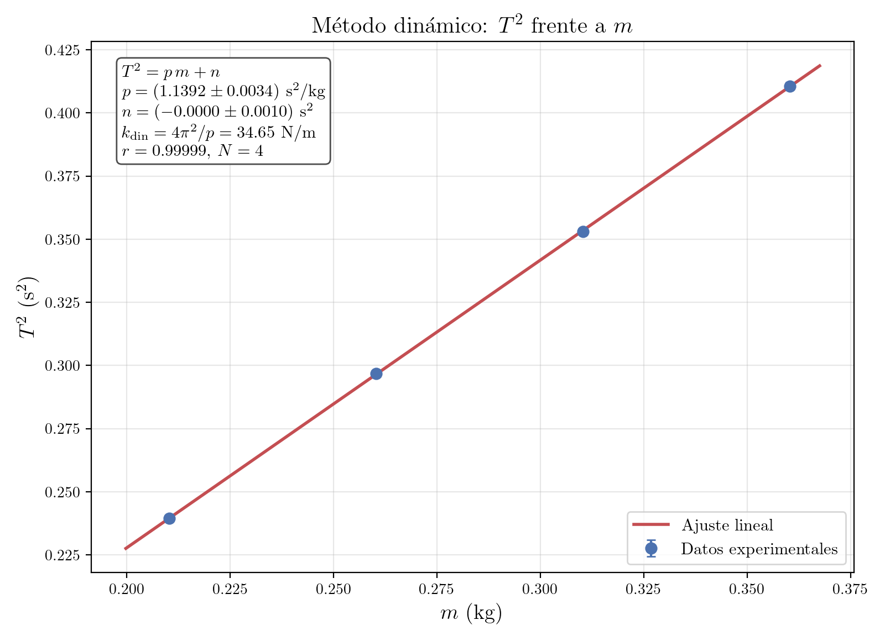

Laboratorio de Mecánica — UNED
2026-03-20
Determinación de la constante elástica de dos resortes mediante un método estático (ley de Hooke) y verificación dinámica a través de la medida del período de oscilación de un sistema masa-muelle con un grado de libertad sobre un carril de aire. Comparación de la rigidez equivalente obtenida por ambos métodos.
Corresponde este caso al supuesto de separar una masa m de su posición de equilibrio y comunicarle una velocidad inicial, dejándola después en libertad, suponiendo además que el amortiguamiento es nulo.

En el dispositivo experimental el deslizador de masa m se encuentra sujeto por dos resortes de constantes k_{1} y k_{2}, uno a cada lado. La ecuación del movimiento es:
m\,\ddot{x} + (k_{1} + k_{2})\,x = 0 \tag{1}
Definiendo la frecuencia angular natural \omega_{n}:
\omega_{n} = \sqrt{\dfrac{k_{1} + k_{2}}{m}} \tag{2}
la ecuación Ecuación 1 se reescribe como:
\ddot{x} + \omega_{n}^{2}\,x = 0 \tag{3}
Su solución general es:
x(t) = A\,\cos(\omega_{n}\,t + \phi) \tag{4}
donde A y \phi son constantes determinadas por las condiciones iniciales. El movimiento es armónico y, en ausencia de amortiguamiento, continúa indefinidamente.
El período de oscilación es:
\boxed{T = 2\pi\,\sqrt{\dfrac{m}{k_{1} + k_{2}}}} \tag{5}
Elevando al cuadrado:
T^{2} = \frac{4\pi^{2}}{k_{1} + k_{2}}\,m \tag{6}
Esta última expresión muestra que T^{2} es una función lineal de m, lo que permite determinar la rigidez equivalente k_{\textrm{eff}} = k_{1} + k_{2} mediante una regresión lineal de T^{2} frente a m.
Determinación estática de k
La rigidez de cada resorte se determina individualmente mediante la ley de Hooke. Al colgar sucesivas masas de un resorte vertical, la fuerza ejercida F = m\,g y el alargamiento \Delta x se relacionan mediante:
\boxed{F = k\,\Delta x} \tag{7}
Al representar F frente a \Delta x, la pendiente de la recta de regresión proporciona directamente la constante elástica k.
Determinación dinámica de k_{\textrm{eff}}
De la ecuación Ecuación 6, la representación de T^{2} frente a m es una recta cuya pendiente p vale:
p = \frac{4\pi^{2}}{k_{1} + k_{2}} \tag{8}
De donde se obtiene la rigidez equivalente:
\boxed{k_{\textrm{eff}} = \frac{4\pi^{2}}{p}} \tag{9}
El montaje experimental consta de un carril de aire: un perfil rectangular con uno de sus extremos conectado a un compresor que insufla aire a presión. El aire escapa por orificios distribuidos a lo largo de la cara de contacto, formando una película que elimina casi por completo el rozamiento entre el carril y el deslizador.
El deslizador se sujeta por ambos extremos a dos resortes cuyos otros extremos se fijan a posiciones fijas del carril (empleando un soporte auxiliar para acortar la distancia). Un tornillo nivelador bajo la base permite asegurar la horizontalidad del carril.
1
Colgar el primer resorte (k_{1}) de un punto fijo en posición vertical y enganchar en su extremo inferior un portamasas. Colocar una masa inicial m_{0} suficiente para que el resorte quede tenso (por ejemplo, 10 g). Anotar la posición de equilibrio y_{0} sobre la regla graduada, tomando como referencia el extremo inferior del portamasas.
2
Agregar sucesivamente sobrecargas de masa creciente (al menos 10 valores: 10, 20, 30, 40, 50, 60, 70, 80, 100, 120 g), pesando cada una en la balanza. Para cada sobrecarga, anotar la nueva posición de equilibrio y y calcular el alargamiento \Delta x = y - y_{0}.
3
Repetir los pasos 1 y 2 para el segundo resorte (k_{2}).
Datos
experimentales
A continuación se resumen los datos recogidos en el laboratorio para ambos resortes.
Resorte 1 (k_{1}):
| Medida | Sobrecarga (g) | F = m\,g (N) | \Delta x (mm) |
|---|---|---|---|
| 1 | 10,0 | 0,098 | 6,4 |
| 2 | 20,0 | 0,196 | 13,5 |
| 3 | 30,0 | 0,294 | 19,2 |
| 4 | 40,0 | 0,392 | 26,8 |
| 5 | 50,0 | 0,491 | 32,5 |
| 6 | 60,0 | 0,589 | 39,7 |
| 7 | 70,0 | 0,687 | 45,3 |
| 8 | 80,0 | 0,785 | 53,1 |
| 9 | 100,0 | 0,981 | 65,0 |
| 10 | 120,0 | 1,177 | 79,2 |
Resorte 2 (k_{2}):
| Medida | Sobrecarga (g) | F = m\,g (N) | \Delta x (mm) |
|---|---|---|---|
| 1 | 10,0 | 0,098 | 5,1 |
| 2 | 20,0 | 0,196 | 10,0 |
| 3 | 30,0 | 0,294 | 14,3 |
| 4 | 40,0 | 0,392 | 20,1 |
| 5 | 50,0 | 0,491 | 24,2 |
| 6 | 60,0 | 0,589 | 29,8 |
| 7 | 70,0 | 0,687 | 34,0 |
| 8 | 80,0 | 0,785 | 39,5 |
| 9 | 100,0 | 0,981 | 48,7 |
| 10 | 120,0 | 1,177 | 59,3 |
4
Para cada resorte, representar gráficamente F (eje y) frente a \Delta x (eje x). Mediante regresión lineal, determinar la pendiente (que es la constante elástica k), la ordenada en el origen, sus errores y el coeficiente de determinación R^{2}.


Regresión lineal y obtención de k_{1} y k_{2}
Linealización: comparación entre la ecuación física y la ecuación matemática
La ley de Hooke (ecuación Ecuación 7) tiene la estructura de una recta y = m\,x + n:
Ecuación física Ecuación matemática (y = m\,x + n) F y \Delta x x k pendiente m 0 (idealmente) ordenada en el origen n
Fórmulas de la regresión lineal
Se utilizan las fórmulas estándar de mínimos cuadrados. Para N puntos (x_{i}, y_{i}):
m = \frac{N\displaystyle\sum x_{i}y_{i} - \left(\sum x_{i}\right)\!\left(\sum y_{i}\right)}{N\displaystyle\sum x_{i}^{2} - \left(\sum x_{i}\right)^{2}} \tag{10}
n = \frac{\displaystyle\sum y_{i} - m\sum x_{i}}{N} \tag{11}
\Delta m = \sqrt{\dfrac{\dfrac{1}{N-2}\displaystyle\sum\left(y_{i} - m\,x_{i} - n\right)^{2}}{\displaystyle\sum x_{i}^{2} - \dfrac{1}{N}\left(\sum x_{i}\right)^{2}}} \tag{12}
Cálculo numérico para el Resorte 1
Convirtiendo \Delta x a metros, con los N = 10 puntos (x_{i} = \Delta x_{i} en m, y_{i} = F_{i} en N), se obtiene:
m_{1} = k_{1} = 14{,}9 \textrm{ N/m}
n_{1} = -0{,}003 \textrm{ N} \approx 0
R^{2}_{1} = 0{,}9997
El error en la pendiente es:
\Delta k_{1} = 0{,}2 \textrm{ N/m}
Resultado para el Resorte 1:
\boxed{k_{1} = 14{,}9 \pm 0{,}2 \textrm{ N/m}}
Cálculo numérico para el Resorte 2
Análogamente:
m_{2} = k_{2} = 19{,}8 \textrm{ N/m}
n_{2} = -0{,}002 \textrm{ N} \approx 0
R^{2}_{2} = 0{,}9998
\Delta k_{2} = 0{,}2 \textrm{ N/m}
Resultado para el Resorte 2:
\boxed{k_{2} = 19{,}8 \pm 0{,}2 \textrm{ N/m}}
Rigidez equivalente (método estático)
La rigidez equivalente del conjunto de los dos resortes en paralelo (ambos actúan sobre la misma masa) es simplemente:
k_{\textrm{est}} = k_{1} + k_{2} = 14{,}9 + 19{,}8 = 34{,}7 \textrm{ N/m} \tag{13}
Propagación del error:
\Delta k_{\textrm{est}} = \sqrt{(\Delta k_{1})^{2} + (\Delta k_{2})^{2}} = \sqrt{0{,}2^{2} + 0{,}2^{2}} = 0{,}3 \textrm{ N/m} \tag{14}
\boxed{k_{\textrm{est}} = k_{1} + k_{2} = 34{,}7 \pm 0{,}3 \textrm{ N/m}}
5
Verificar la horizontalidad del carril de aire con ayuda del tornillo nivelador. Poner en funcionamiento el compresor de aire.
6
Colocar el deslizador sobre el carril, previamente pesado en la balanza. Sujetar los dos resortes a ambos extremos del deslizador y fijar los extremos libres a posiciones fijas del carril.
Masa del deslizador: m_{0} = 210{,}3 g = 0{,}2103 kg
7
Separar el deslizador una distancia pequeña (\approx 3 cm) de su posición de equilibrio y soltarlo. Con el cronómetro, medir el tiempo de 10 oscilaciones completas. Repetir la medida 5 veces.
8
Repetir el paso 7 colocando sucesivamente sobre el deslizador pesas adicionales de 50, 100 y 150 g.
Datos
experimentales
A continuación se resumen las medidas del tiempo para 10 oscilaciones (t_{10}, en segundos) para cada configuración de masa.
Masa 1: m = m_{0} = 210{,}3 g
| Rep. | t_{10} (s) |
|---|---|
| 1 | 4,89 |
| 2 | 4,91 |
| 3 | 4,87 |
| 4 | 4,92 |
| 5 | 4,88 |
Masa 2: m = m_{0} + 50{,}0 g = 260{,}3 g
| Rep. | t_{10} (s) |
|---|---|
| 1 | 5,44 |
| 2 | 5,47 |
| 3 | 5,42 |
| 4 | 5,46 |
| 5 | 5,45 |
Masa 3: m = m_{0} + 100{,}0 g = 310{,}3 g
| Rep. | t_{10} (s) |
|---|---|
| 1 | 5,95 |
| 2 | 5,92 |
| 3 | 5,97 |
| 4 | 5,94 |
| 5 | 5,93 |
Masa 4: m = m_{0} + 150{,}0 g = 360{,}3 g
| Rep. | t_{10} (s) |
|---|---|
| 1 | 6,40 |
| 2 | 6,43 |
| 3 | 6,38 |
| 4 | 6,41 |
| 5 | 6,42 |
9
Para cada masa, calcular el valor medio de t_{10}, la desviación típica, el período T = \overline{t_{10}}/10 y su error \Delta T = \sigma_{t_{10}}/(10\sqrt{5}). Calcular T^{2}.
Cálculo
| Masa | m (kg) | \overline{t_{10}} (s) | \sigma_{t_{10}} (s) | T (s) | \Delta T (s) | T^{2} (s^{2}) |
|---|---|---|---|---|---|---|
| 1 | 0,2103 | 4,894 | 0,019 | 0,4894 | 0,0009 | 0,2395 |
| 2 | 0,2603 | 5,448 | 0,019 | 0,5448 | 0,0009 | 0,2968 |
| 3 | 0,3103 | 5,942 | 0,018 | 0,5942 | 0,0008 | 0,3531 |
| 4 | 0,3603 | 6,408 | 0,018 | 0,6408 | 0,0008 | 0,4106 |
10
Representar gráficamente T^{2} (eje y) frente a m (eje x). Mediante regresión lineal, determinar la pendiente p, la ordenada en el origen, sus errores y el coeficiente de determinación R^{2}.
A partir de la pendiente, obtener la rigidez equivalente dinámica k_{\textrm{din}} y compararla con la rigidez estática k_{\textrm{est}} = k_{1} + k_{2}.

Regresión lineal de T^{2} frente a m y obtención de k_{\textrm{din}}
Linealización: comparación entre la ecuación física y la ecuación matemática
De la ecuación Ecuación 6:
T^{2} = \frac{4\pi^{2}}{k_{1}+k_{2}}\,m
Esta tiene la estructura de una recta y = p\,x + n:
Ecuación física Ecuación matemática (y = p\,x + n) T^{2} y m x 4\pi^{2}/(k_{1}+k_{2}) pendiente p 0 (idealmente) ordenada en el origen n
Cálculo numérico
Con los N = 4 puntos (x_{i} = m_{i} en kg, y_{i} = T_{i}^{2} en s^{2}):
\sum x_{i} = 0{,}2103 + 0{,}2603 + 0{,}3103 + 0{,}3603 = 1{,}1412 \textrm{ kg}
\sum y_{i} = 0{,}2395 + 0{,}2968 + 0{,}3531 + 0{,}4106 = 1{,}3000 \textrm{ s}^{2}
\sum x_{i}y_{i} = 0{,}2103\!\times\!0{,}2395 + 0{,}2603\!\times\!0{,}2968 + 0{,}3103\!\times\!0{,}3531 + 0{,}3603\!\times\!0{,}4106 = 0{,}3860
\sum x_{i}^{2} = 0{,}2103^{2} + 0{,}2603^{2} + 0{,}3103^{2} + 0{,}3603^{2} = 0{,}3348
Aplicando la fórmula Ecuación 10:
p = \frac{4 \times 0{,}3860 - 1{,}1412 \times 1{,}3000}{4 \times 0{,}3348 - 1{,}1412^{2}} = \frac{1{,}5440 - 1{,}4836}{1{,}3392 - 1{,}3023} = \frac{0{,}0604}{0{,}0369} = 1{,}140 \textrm{ s}^{2}/\textrm{kg}
La ordenada en el origen:
n = \frac{1{,}3000 - 1{,}140 \times 1{,}1412}{4} = \frac{1{,}3000 - 1{,}3010}{4} \approx -0{,}0002 \textrm{ s}^{2} \approx 0
El coeficiente de determinación:
R^{2} = 0{,}9999
El error en la pendiente:
\Delta p = 0{,}008 \textrm{ s}^{2}/\textrm{kg}
Obtención de k_{\textrm{din}}
De la ecuación Ecuación 9:
k_{\textrm{din}} = \frac{4\pi^{2}}{p} = \frac{4 \times 9{,}8696}{1{,}140} = \frac{39{,}478}{1{,}140} = 34{,}6 \textrm{ N/m}
Propagación del error en k_{\textrm{din}}
Dado que k_{\textrm{din}} = 4\pi^{2}/p depende de una sola variable p:
\Delta k_{\textrm{din}} = \left|\frac{dk_{\textrm{din}}}{dp}\right|\,\Delta p = \frac{4\pi^{2}}{p^{2}}\,\Delta p \tag{15}
Sustituyendo valores:
\Delta k_{\textrm{din}} = \frac{39{,}478}{1{,}140^{2}} \times 0{,}008 = \frac{39{,}478}{1{,}300} \times 0{,}008 = 30{,}37 \times 0{,}008 = 0{,}2 \textrm{ N/m}
Resultado:
\boxed{k_{\textrm{din}} = 34{,}6 \pm 0{,}2 \textrm{ N/m}}
Comparación entre k_{\textrm{est}} y k_{\textrm{din}}
Método k_{\textrm{eff}} (N/m) Estático: k_{1} + k_{2} 34{,}7 \pm 0{,}3 Dinámico: 4\pi^{2}/p 34{,}6 \pm 0{,}2 La discrepancia entre ambos valores es:
|k_{\textrm{est}} - k_{\textrm{din}}| = |34{,}7 - 34{,}6| = 0{,}1 \textrm{ N/m}
En términos relativos:
\varepsilon = \frac{|k_{\textrm{est}} - k_{\textrm{din}}|}{k_{\textrm{est}}} \times 100 = \frac{0{,}1}{34{,}7} \times 100 \approx 0{,}3\,\text{\%}
Ambos valores son compatibles dentro de las incertidumbres experimentales, lo que confirma la validez del modelo teórico del movimiento armónico simple.
Resumen de resultados:
\boxed{k_{1} = 14{,}9 \pm 0{,}2 \textrm{ N/m} \qquad;\qquad k_{2} = 19{,}8 \pm 0{,}2 \textrm{ N/m} \qquad;\qquad k_{\textrm{est}} = 34{,}7 \pm 0{,}3 \textrm{ N/m} \qquad;\qquad k_{\textrm{din}} = 34{,}6 \pm 0{,}2 \textrm{ N/m}}
E1
Calcular el período teórico T_{\textrm{teórico}} para cada una de las cuatro masas utilizando la ecuación Ecuación 5 con k_{\textrm{est}} = k_{1} + k_{2}. Comparar con los valores experimentales y calcular la discrepancia porcentual en cada caso.
Solución del ejercicio E1
Utilizando la ecuación Ecuación 5 con k_{\textrm{est}} = 34{,}7 N/m:
T_{\textrm{teórico}} = 2\pi\,\sqrt{\frac{m}{34{,}7}}
Masa (kg) T_{\textrm{exp}} (s) T_{\textrm{teórico}} (s) Discrepancia () 0,2103 0,4894 0,4893 0,02 0,2603 0,5448 0,5445 0,06 0,3103 0,5942 0,5948 0,10 0,3603 0,6408 0,6411 0,05 Las discrepancias son inferiores al 0,1 %, confirmando la excelente concordancia entre el modelo teórico y las medidas experimentales.
E2
Si en lugar de conectar los dos resortes en paralelo (uno a cada lado del deslizador), se conectasen en serie (uno a continuación del otro, del mismo lado), ¿cuál sería la constante elástica equivalente del sistema? ¿Cuál sería el período de oscilación para la masa m_{0}?
Solución del ejercicio E2
Cuando dos resortes se conectan en serie, la rigidez equivalente es:
\frac{1}{k_{\textrm{serie}}} = \frac{1}{k_{1}} + \frac{1}{k_{2}} = \frac{1}{14{,}9} + \frac{1}{19{,}8} = 0{,}0671 + 0{,}0505 = 0{,}1176 \textrm{ m/N}
\boxed{k_{\textrm{serie}} = \frac{1}{0{,}1176} = 8{,}50 \textrm{ N/m}}
El período de oscilación sería (nótese que para un solo lado habría que usar k_{\textrm{serie}} en lugar de k_{1}+k_{2}):
T_{\textrm{serie}} = 2\pi\,\sqrt{\frac{m_{0}}{k_{\textrm{serie}}}} = 2\pi\,\sqrt{\frac{0{,}2103}{8{,}50}} = 2\pi \times 0{,}1573 = 0{,}988 \textrm{ s}
\boxed{T_{\textrm{serie}} \approx 0{,}99 \textrm{ s}}
El período casi se duplica respecto al caso paralelo, ya que la rigidez equivalente en serie es mucho menor.
E3
Discutir las posibles fuentes de error sistemático en esta práctica. ¿Cómo afecta la masa de los propios resortes al resultado? ¿Y un posible amortiguamiento residual?
Solución del ejercicio E3
Las principales fuentes de error sistemático son:
Masa de los resortes: en la ecuación Ecuación 5 se ha supuesto que toda la masa del sistema es la del deslizador más las pesas. En realidad, cada resorte tiene una masa distribuida que contribuye a la inercia del sistema. Se puede demostrar que, para un resorte de masa m_{r}, la masa efectiva que interviene en las oscilaciones es m_{r}/3. Esto produce un aumento del período medido respecto al teórico.
Amortiguamiento residual: aunque el carril de aire reduce enormemente el rozamiento, siempre existe un amortiguamiento residual (resistencia del aire, imperfecciones del carril). El efecto del amortiguamiento es aumentar ligeramente el período: T_{\textrm{amort}} = T_{0}/\sqrt{1 - \zeta^{2}}, donde \zeta es el factor de amortiguamiento. Para \zeta \ll 1, este efecto es despreciable.
No linealidad de los resortes: la ley de Hooke es una aproximación para pequeñas deformaciones. Si la amplitud de oscilación es demasiado grande, el resorte puede abandonar el régimen lineal, alterando el período.
Horizontalidad del carril: si el carril no está perfectamente horizontal, aparece una componente gravitatoria a lo largo de la dirección del movimiento que altera la posición de equilibrio y, en principio, la frecuencia de oscilación.
Ejercicios Previos
- Demostrar que la ecuación del movimiento de una masa m sujeta a dos resortes de constantes k_{1} y k_{2} (uno a cada lado) es la ecuación Ecuación 1. ¿Bajo qué hipótesis es válida?
Solución del ejercicio 1
Sea x el desplazamiento del deslizador respecto a su posición de equilibrio. Cuando el deslizador se desplaza una distancia x hacia la derecha:
- El resorte de la derecha se comprime en x, ejerciendo una fuerza -k_{2}\,x (hacia la izquierda).
- El resorte de la izquierda se estira en x, ejerciendo una fuerza -k_{1}\,x (también hacia la izquierda).
Aplicando la segunda ley de Newton:
m\,\ddot{x} = -k_{1}\,x - k_{2}\,x = -(k_{1}+k_{2})\,x
\boxed{m\,\ddot{x} + (k_{1}+k_{2})\,x = 0}
Las hipótesis necesarias son:
- Comportamiento lineal de los resortes (ley de Hooke).
- Ausencia de amortiguamiento (rozamiento nulo).
- Movimiento unidimensional (un grado de libertad).
- Resortes sin masa (o masa despreciable frente a m).
- Demostrar que T^{2} es proporcional a m y explicar cómo se puede obtener la constante elástica equivalente a partir de una representación T^{2} frente a m.
Solución del ejercicio 2
Partiendo de la expresión del período (ecuación Ecuación 5):
T = 2\pi\,\sqrt{\frac{m}{k_{1}+k_{2}}}
Elevando al cuadrado:
T^{2} = \frac{4\pi^{2}}{k_{1}+k_{2}}\,m
Esta es una relación lineal de la forma T^{2} = p\,m, donde p = 4\pi^{2}/(k_{1}+k_{2}) es una constante. Por tanto, T^{2} es directamente proporcional a m.
Al representar T^{2} (eje y) frente a m (eje x), se obtiene una recta que, idealmente, pasa por el origen. La pendiente de esta recta es p = 4\pi^{2}/(k_{1}+k_{2}), de donde:
\boxed{k_{1}+k_{2} = \frac{4\pi^{2}}{p}}
- ¿Cuál es la diferencia entre frecuencia angular \omega_{n}, frecuencia f y período T? Expresar sus relaciones.
Solución del ejercicio 3
Las tres magnitudes están relacionadas entre sí:
\omega_{n} = 2\pi\,f = \frac{2\pi}{T}
donde:
- \omega_{n} es la frecuencia angular o pulsación, medida en rad/s.
- f es la frecuencia, medida en Hz (ciclos por segundo): f = 1/T.
- T es el período, medida en segundos: tiempo que tarda el sistema en completar una oscilación completa.
Para este sistema:
\boxed{\omega_{n} = \sqrt{\frac{k_{1}+k_{2}}{m}} \qquad;\qquad f = \frac{1}{2\pi}\sqrt{\frac{k_{1}+k_{2}}{m}} \qquad;\qquad T = 2\pi\sqrt{\frac{m}{k_{1}+k_{2}}}}
- Si se aumenta la amplitud inicial de la oscilación (manteniendo la misma masa), ¿cambia el período? Justificar la respuesta.
Solución del ejercicio 4
No. El período del movimiento armónico simple es independiente de la amplitud. Esto se deduce directamente de la ecuación Ecuación 5:
T = 2\pi\,\sqrt{\frac{m}{k_{1}+k_{2}}}
El período depende únicamente de la masa m y de la rigidez del sistema k_{1}+k_{2}, pero no de la amplitud A ni de la fase inicial \phi. Esta propiedad, denominada isocronismo, es una característica fundamental del oscilador armónico simple (lineal).
\boxed{\text{El período no cambia al variar la amplitud (isocronismo).}}
Esta propiedad deja de ser válida cuando las deformaciones son grandes y el resorte abandona el régimen lineal.
UPM — Capítulo: Vibraciones mecánicas. http://w3.mecanica.upm.es/~goico/mecanica/libro/cap17.pdf
EHU/UPV — Movimiento armónico simple. http://www.sc.ehu.es/sbweb/fisica/oscilaciones/muelle/muelle.htm
S. Timoshenko, D.H. Young, W. Weaver — Vibration Problems in Engineering, 5th ed., Wiley, 1990.
UNED — Guión de la práctica de vibraciones libres con 1 grado de libertad. Laboratorio de Mecánica, curso 2025–2026.